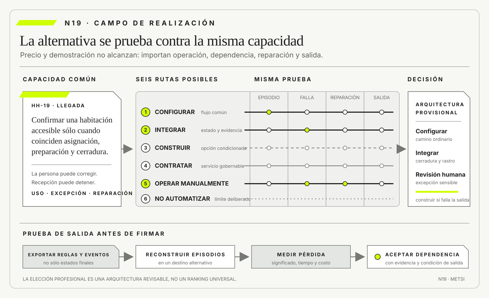

Ronald Coase
The Nature of the FirmEconomica · 1937
Explicó por qué las fronteras de la organización dependen de costos de coordinación.

N19 transforma la adquisición en diseño sociotécnico.
Alternativas de realización: configurar, integrar, construir y no automatizar
Ruta de lectura: problema, distinciones, decisiones, prueba, transferencia y preparación.

Nota. SIN NUM. identifica aparatos de orientación y referencia.
Seis referentes y las obras principales utilizadas para construir N19.
Explicó por qué las fronteras de la organización dependen de costos de coordinación.

Desarrolló el análisis de gobernanza y costos de transacción.

Vinculó procesos, información, tecnología y cambio organizacional.

Impulsó estándares abiertos e interoperables que reducen dependencia de una implementación particular.

Codificó prácticas de desarrollo seguro que pueden convertirse en evidencia exigible a productos y proveedores.

Lideró un marco para gobernar y medir riesgos de inteligencia artificial durante adquisición, uso y retiro.
N19 no resume estas fuentes ni las convierte en receta. Las pone en tensión para construir juicio profesional.
¿Cómo elegir una forma de realizar capacidad sin reducir la decisión a construir o comprar y sin trasladar riesgos invisibles a proveedores, operación o personas?

Comparar alternativas exige mirar capacidad, costo total, control, dependencia, evidencia y salida.
Un municipio selecciona una plataforma integral para turnos, expedientes y notificaciones. La propuesta promete mejores prácticas, implementación rápida y menor mantenimiento. La comparación se presenta como comprar algo probado o construir desde cero.
Después de adjudicar, aparecen decisiones omitidas. La plataforma no modela la autoridad local para excepciones, el canal exige cambiar acuerdos con áreas de atención y los datos del registro civil necesitan una integración específica. Para conservar los plazos comunicados se agregan configuraciones, conectores y trabajo manual.
La organización no compró una capacidad terminada. Compró opciones, restricciones, dependencias y una relación de suministro que debe diseñarse. Parte del valor está en lo estándar; parte del riesgo nace en la adaptación. La disyuntiva original ocultó el sistema de trabajo necesario para hacer operable el producto.
El grupo responsable amplía el espacio de decisión. Puede configurar, integrar, construir componentes, contratar un servicio gestionado, mantener una operación manual temporal o decidir no automatizar una excepción rara y riesgosa. Cada opción se evalúa por consecuencia total, no por precio inicial.
La primera comparación desarma la promesa de rapidez. Configurar el producto cubre el flujo ordinario en seis semanas, pero obliga a traducir situaciones documentales diferentes a una categoría genérica. Integrar el registro civil agrega evidencia decisiva y dos fronteras de falla. Construir el decisor preserva significado, aunque demora y crea una capacidad que deberá mantenerse. La operación manual sostiene el borde durante el aprendizaje, pero sólo si se reconoce carga y autoridad. Ninguna alternativa domina en todas las dimensiones.
La demostración se repite con una identidad rectificada, un trámite con apoyo de accesibilidad y una caída del canal. El recorrido estándar deja de ser suficiente. El proveedor no puede mostrar quién corrige un estado ni qué registro entrega para explicar la decisión. La pregunta cambia de “¿qué funcionalidades tiene?” a “¿qué sistema de trabajo hace falta alrededor y quién responde cuando falla?”. Esa reformulación vuelve comparables soluciones técnicamente distintas.
La conducción decide por arquitectura y etapas. Compra capacidad común, conserva control sobre la regla que expresa la promesa e introduce automatización sólo donde existe evidencia. La elección no elimina alternativas: documenta por qué algunas quedan en reserva y qué cambio las volvería preferibles. De ese modo, contratar no cierra diseño; inicia una relación que debe gobernarse durante operación y salida.
La arquitectura de N15 y la coherencia de N16 permiten localizar fronteras. HH-18 aporta compromisos, obligaciones verificadas o pendientes de validación y legado. N19 reúne esas evidencias en un expediente de realización con costo de vida, dependencia, control, reversibilidad y salida.
La elección deja de premiar una identidad tecnológica. Su pregunta es qué capacidad debe conservar la organización, qué puede delegar, qué evidencia necesita del proveedor y cómo reparará cuando la relación o el producto fallen.
HH-18 dejó dos registros separados: un compromiso institucional verificado mediante evidencia y testimonio operacional, y una posible obligación normativa cuya fuente sigue pendiente de validación competente. N19 recibe ambos sin convertir el testimonio de Mariela Benítez en fundamento jurídico. Federico Müller presenta tres ofertas: ampliar el PMS, integrar el servicio de cerraduras o construir un decisor propio. Camila Duarte agrega una operación gestionada del canal y Mariela defiende una verificación manual para las habitaciones accesibles desde su conocimiento de la operación. Cada alternativa cubre una parte de la capacidad y crea dependencias diferentes. Ninguna puede presentarse como cumplimiento legal hasta que el registro normativo identifique instrumento, disposición, vigencia, ámbito y autoridad interpretativa.

El expediente HH-19 compara cobertura del episodio, tiempo para aprender, costo total de vida, acceso a datos, portabilidad, seguridad, autoridad y reparación. La demostración del proveedor funciona en el camino ordinario, pero no prueba reasignaciones durante una caída del canal. La construcción propia ofrece control semántico, aunque concentra conocimiento en dos personas. La verificación manual protege el borde, pero no soporta el volumen de todas las reservas.
Ricardo Sosa propone configurar el flujo común, integrar evidencia de cerradura y conservar revisión humana para accesibilidad y sobreventa. Elena Acosta condiciona la compra a exportación de reglas, registro de decisiones, prueba de salida y continuidad ante indisponibilidad del proveedor. El primer mes no automatiza excepciones de baja frecuencia y alto daño, porque todavía falta evidencia para diseñarlas sin trasladar riesgo a Recepción.
Camila solicita incluir mensajes personalizados generados por IA. El piloto separa redacción asistida de autorización comercial. La herramienta puede preparar un borrador desde datos mínimos, pero Lucía verifica estado y alcance antes de enviar. Se conservan versión, fuente y corrección. Si el servicio generativo no está disponible, el episodio sigue con plantillas aprobadas. La novedad técnica no se convierte en dependencia operacional crítica.
Federico ejecuta una prueba de portabilidad antes de firmar. Exporta reglas y eventos, reconstruye diez reservas en un entorno alternativo y mide qué significado se pierde. Descubre que el proveedor entrega estados finales, pero no la secuencia de correcciones. La cláusula se modifica para incluir historial y cooperación. Una prueba de dos días cambia una obligación plurianual que la comparación de precios no había mostrado.
Mariela registra el trabajo manual y su distribución. La revisión accesible demora poco en horario diurno y se vuelve frágil de noche. En vez de declarar que el procedimiento funciona, HH-19 incorpora cobertura de turnos, escalamiento y un límite de volumen. Si los casos superan ese umbral, la organización debe rediseñar o financiar capacidad. El costo humano deja de ser variable gratuita.
La recomendación no se expresa como ranking universal. Para el flujo ordinario, configurar ofrece menor tiempo para aprender y continuidad de actualizaciones. Para el contrato de estados, integrar resulta necesario aunque agrega reconciliación. Para las excepciones sensibles, la revisión humana conserva una capacidad que ninguna oferta demostró. Construir queda como opción condicionada: se reabre si el proveedor impide exportar reglas o si la integración no sostiene la semántica. Cada parte tiene criterio de permanencia y de salida.
Elena exige además una lectura por actor. Tecnología obtiene menos componentes propios, pero asume gobierno de interfaces; Recepción gana evidencia y también una nueva responsabilidad de revisión; Housekeeping debe producir estados con tiempos más explícitos; Comercial pierde libertad para confirmar antes de una puerta. El beneficio no se distribuye solo. HH-19 muestra quién gana velocidad, quién absorbe trabajo y quién puede impugnar, para que la arquitectura no se decida sólo desde el presupuesto de adquisición.
La decisión se aprueba con riesgo residual. Todavía puede fallar una sincronización, aumentar la carga nocturna o cambiar el precio. Para cada incertidumbre se define señal, responsable y respuesta. Esa preparación transforma una selección de producto en una elección institucional capaz de aprender durante su vida útil.
La elección se revisará con incidentes, tiempos de reparación, costo operacional y capacidad efectiva de migrar. HH-20 recibirá como cierre la arquitectura de realización, los dos registros separados de accesibilidad y las renuncias de la decisión para convertirlos en una estrategia metodológica con hitos que habiliten, modifiquen o detengan compromiso.
N19 transforma la adquisición en diseño sociotécnico. Amplía alternativas y compara capacidad, costo total, control, dependencia, seguridad, evidencia, reversibilidad y reparación durante todo el ciclo de vida. La recomendación es una arquitectura provisional de responsabilidades y salidas, no un ranking universal de productos ni una transferencia implícita de obligaciones.

N18 entrega un expediente que distingue compromisos verificados, obligaciones validadas o pendientes, práctica heredada, decisión de diseño, valor conservado y condición de retiro. N19 lo convierte en criterios para comparar configurar, integrar, construir, tercerizar, mantener trabajo manual o no automatizar sin perder protecciones ni memoria operativa.
N20 tomará la opción seleccionada y compondrá una estrategia con adaptación metodológica (tailoring), hitos y condiciones de salida. N19 no convierte la elección en plan de ejecución.
N19 articula economía de la organización, modularidad, arquitectura, seguridad de la cadena de suministro, portabilidad y gobierno de costos. Coase y Williamson ayudan a formular la frontera de la firma; las fuentes técnicas permiten probar si la alternativa elegida puede integrarse, operarse, auditarse y abandonarse.
Coase, R. H. abre la pregunta por qué coordinar dentro o fuera de la organización.
Williamson, O. E. permite comparar formas de gobernanza bajo dependencia e incertidumbre.
Baldwin, C. Y. y Clark, K. B. relacionan modularidad con opciones y costos de cambio.
Hohpe, G. y Woolf, B. aportan patrones para discutir mensajería, integración y evolución sin reducirlas a conectividad.
Davenport, T. H. vincula procesos, información y tecnología para evaluar una realización dentro del cambio organizacional que exige. Berners-Lee, T. aporta estándares abiertos como condición de interoperabilidad y salida. Scarfone, K., Souppaya, M. y Dodson, D. integran prácticas de desarrollo seguro que permiten exigir evidencia al software adquirido o integrado. Estas perspectivas vuelven observable la capacidad completa, no sólo la función visible del producto.
Boyens, J. M., Smith, A., Bartol, N., Winkler, K., Holbrook, A. y Fallon, M. integran riesgo de cadena de suministro durante adquisición, operación y retiro.
NIST ubica SBOM, verificación y riesgo de proveedor en la compra de software.
CISA traduce demanda segura en preguntas y evidencia para adquirentes.
NTIA hace visible composición y dependencia de componentes.
ISO/IEC extiende seguridad a relaciones con proveedores y cadena de suministro.
Unión Europea incorpora portabilidad, acceso y condiciones de cambio de proveedor.
Tabassi, E. organiza gobierno, mapeo, medición y manejo del riesgo de inteligencia artificial antes de adquirir o desplegar una capacidad.
FinOps Foundation ayuda a observar costo tecnológico como responsabilidad compartida y continua.
Las fuentes abren tres controversias. La economía de costos de transacción puede favorecer coordinación interna cuando dependencia y especificidad son altas, pero la modularidad muestra que una frontera bien diseñada puede crear opciones incluso con proveedores. La arquitectura de integración permite combinar especialización, aunque cada contrato agrega trabajo de reconciliación. La seguridad de suministro exige visibilidad sin suponer que construir internamente elimina componentes externos.
Coase y Williamson no ofrecen una fórmula de compra. Permiten preguntar qué costos de buscar, acordar, supervisar y cambiar se crean en cada forma de gobierno. Baldwin y Clark agregan que la modularidad tiene valor cuando las interfaces realmente aíslan decisiones. Hohpe muestra que conectar mensajes no resuelve semántica ni fallas. NIST, CISA, NTIA e ISO/IEC transforman esas ideas en evidencia exigible durante adquisición y operación.
El Data Act europeo hace visible que acceso y portabilidad son condiciones de poder, no detalles finales. FinOps distribuye responsabilidad por costo entre tecnología, finanzas y negocio. El marco de Tabassi impide adquirir IA sólo por precisión. N19 integra esas tradiciones para comparar una capacidad completa: valor, control, dependencia, seguridad, costo, reparación y derecho de salida.
Una decisión de realización comienza por la capacidad que debe existir y el resultado que debe sostener, no por un catálogo. Esta formulación conserva abiertas alternativas que una solución nombrada cerraría de antemano.
La capacidad incluye uso, operación, seguridad, cambio y reparación bajo condiciones concretas. Dos productos con funciones parecidas pueden sostenerla de manera muy distinta si cambian autoridad, dependencia o trabajo humano.
Hotel Horizonte necesita entregar habitaciones defendibles, no “comprar un motor”. HH-19 evalúa toda opción contra ese episodio y su excepción accesible.
Formular capacidad exige completar una oración verificable: una población puede realizar una acción, bajo ciertas condiciones, con una consecuencia y una vía de reparación. “Gestionar reservas” es demasiado amplio; “Recepción puede confirmar una habitación accesible sólo cuando asignación, preparación y cerradura coinciden, y puede revertir ante discrepancia” ofrece un episodio contra el cual comparar. El detalle no prescribe todavía tecnología, pero excluye soluciones que sólo cubren una función aislada.
La distinción con funcionalidad es central. Una plataforma puede incluir una pantalla de accesibilidad y, sin embargo, no sostener la capacidad si el dato llega tarde, el rol no puede corregir o el proveedor no conserva evidencia. A la inversa, una combinación modesta de reglas, integración y revisión humana puede sostenerla mejor. La evaluación observa relaciones entre información, decisión, operación y autoridad, no cantidad de casillas en un catálogo.
La capacidad incluye condiciones adversas. Se pregunta qué ocurre con baja conectividad, volumen alto, ausencia de una persona o falla de un proveedor. Si sólo existe en la demostración, todavía es posibilidad técnica. HH-19 exige uso ordinario, excepción y recuperación, y registra qué parte depende de terceros. Esa descripción servirá después para estimar costo total y salida sin confundir posesión del artefacto con control del servicio.
El espacio de opciones incluye configurar, integrar, construir, contratar un servicio, operar manualmente y no automatizar. También admite combinaciones y secuencias, siempre que cada una sea una alternativa completa.
Ampliar opciones no significa analizarlas indefinidamente. Se descartan con criterios explícitos de capacidad, obligación, costo total, tiempo para aprender y salida, conservando el supuesto que podría rehabilitarlas.
Una comparación que excluye el trabajo manual o el límite de no automatizar favorece tecnología por construcción y no por evidencia.
Las opciones deben expresarse en un nivel comparable. “Comprar la plataforma A” no puede enfrentarse con “desarrollar internamente” como categorías vacías. Cada alternativa describe alcance, integración, personas, operación, transición y retiro. Una opción puede combinar configuración del camino común, componente propio para una regla diferenciadora y revisión manual para casos de alta consecuencia. Esa combinación compite como arquitectura completa, no como lista de piezas.
El descarte temprano se apoya en restricciones duras. Una alternativa que no permite rectificar datos, que carece de salida o que exige delegar una autoridad indelegable no sigue en la comparación por ser económica. Después se contrastan dimensiones graduables: tiempo para aprender, costo, flexibilidad, dependencia y desempeño. Separar umbrales de preferencias impide compensar un incumplimiento grave con ventajas agregadas.
Conservar opciones tiene costo. Una prueba paralela puede duplicar trabajo y demorar la decisión. HH-19 mantiene abiertas sólo aquellas cuyo supuesto crítico todavía puede cambiar y define qué evidencia cerrará cada una. Una alternativa descartada conserva el motivo y la condición de reconsideración. Así la comparación evita tanto la clausura prematura como la exploración indefinida.
Configurar adapta el comportamiento mediante mecanismos previstos por un producto. Preserva el núcleo del proveedor, pero acepta sus categorías, secuencias y límites de extensión.
La decisión exige distinguir configuración portable de personalización propietaria. Deben probarse actualizaciones, permisos, auditoría y reversión, no sólo el caso feliz de la demostración.
En HH-19, la regla ordinaria puede configurarse si el producto conserva revisión humana para la excepción que no representa.
La configuración hereda el modelo conceptual del producto. Catálogos, permisos, estados y secuencias fueron diseñados para un conjunto de clientes y expresan supuestos sobre cómo funciona el trabajo. Adoptarlos puede simplificar integración y actualizaciones, pero también normalizar una práctica ajena. HH-19 compara cada categoría con los episodios de Hotel Horizonte y registra toda traducción necesaria.
Existe un gradiente entre parámetro y modificación. Una regla declarativa soportada, exportable y probada tras una actualización conserva mejor la ruta del producto. Un script insertado en un punto interno puede brindar flexibilidad inmediata y multiplicar dependencia. La decisión no se funda en el nombre comercial “sin código”, sino en quién comprende, prueba, migra y mantiene el comportamiento.
La evidencia incluye una actualización. Muchos productos funcionan el día de la configuración y fallan al cambiar versión, volumen o módulo. Se exportan reglas, se reconstruye el ambiente y se comprueba que permisos y auditoría mantengan significado. Si el proveedor controla cuándo cambia la plataforma, el contrato y el monitoreo deben dar tiempo para evaluar antes de afectar operación. Configurar reduce desarrollo propio, no elimina diseño ni responsabilidad.
Integrar coordina componentes mediante contratos sintácticos, semánticos, temporales y operacionales. Que una API responda no demuestra que ambos sistemas entiendan el mismo estado ni sepan reparar una discrepancia.
El costo incluye reconciliación, observabilidad, versionado y autoridad ante fallas. La integración se prueba sobre el episodio completo y sobre la demora o duplicación que podría cambiar una promesa.
El hotel sólo puede confirmar una habitación cuando cerradura, PMS, asignación y comunicación sostienen conjuntamente la misma decisión.
Los contratos sintácticos fijan campos y formatos; los semánticos, qué significa cada valor; los temporales, vigencia, orden y latencia; los operacionales, detección, reintento, conciliación y responsabilidad. Una integración puede aprobar pruebas de interfaz y fallar porque “entregable” designa limpieza terminada en un sistema y la combinación de preparada, asignable, accesible y confirmada en otro. Ese defecto no se corrige agregando reintentos.
La integración produce estados intermedios inevitables. Un mensaje puede duplicarse, llegar tarde o no llegar. El diseño debe decidir si tolera demora, bloquea, compensa o deriva a una persona. Idempotencia, correlación y observabilidad son mecanismos para contener incertidumbre, pero necesitan reglas de negocio. Repetir una confirmación puede ser técnicamente seguro y comercialmente dañino si envía dos mensajes.
El costo crece con cada frontera y con la necesidad de coordinar cambios. HH-19 no cuenta sólo conectores; mide cuántos equipos, proveedores y calendarios deben acordar para modificar una regla. La prueba cambia una versión y fuerza una discrepancia. Si nadie puede identificar cuál representación gobierna ni quién repara, la arquitectura distribuyó componentes y concentró incapacidad de decisión.
Construir crea control directo sobre una capacidad cuando diferenciación, regulación o restricción lo justifican. También crea obligación de diseñar, operar, asegurar, evolucionar y retirar lo construido.


El control nominal es insuficiente si el conocimiento queda concentrado o si componentes externos dominan la solución. HH-19 registra competencias, cadena de suministro y costo de mantener la capacidad durante su vida útil.
La prueba no termina con el despliegue: operación debe resolver una excepción y un cambio sin asistencia extraordinaria del equipo creador.
Construir resulta defendible cuando la capacidad expresa una diferencia estratégica, una obligación que el mercado no cubre o una necesidad de control cuyo valor supera el costo de sostenerla. No se justifica por orgullo técnico ni por desconfianza general hacia proveedores. La propuesta debe explicar qué decisión propia habilita y por qué configurar o integrar no la realiza con menor exposición.
El costo de oportunidad es parte del análisis. Cada persona dedicada a construir una capacidad común deja de trabajar sobre un problema específico. Además, el desarrollo crea una línea futura de seguridad, documentación, soporte y retiro. Una primera versión económica puede ser cara cuando la organización no financia su evolución. HH-19 evalúa presupuesto y competencias durante varios ciclos, no sólo hasta la inauguración.
El control debe probarse. Poseer el repositorio no garantiza comprender dependencias ni poder desplegar sin dos especialistas. Se ensaya cambio de responsable, restauración, actualización de bibliotecas y respuesta a vulnerabilidad. El conocimiento se distribuye mediante revisión, automatización y documentación orientada a decisiones. Si la capacidad no sobrevive al equipo inicial, construir reemplazó dependencia de proveedor por dependencia interna.
Un servicio gestionado delega actividades bajo un acuerdo y puede asignar al proveedor responsabilidades operativas, contractuales e incluso jurídicas dentro del marco aplicable. Esa distribución no permite suponer que desaparecen la rendición de cuentas de la organización ni las obligaciones que una norma declare no delegables. HH-19 distingue ejecución, responsabilidad asignada, rendición de cuentas y autoridad de reparación antes de comparar ofertas.
La ejecución responde quién realiza una actividad. La responsabilidad asignada identifica quién debe cumplir una prestación y responder por su incumplimiento según contrato y norma. La rendición de cuentas, también denominada accountability, indica quién debe explicar la decisión, supervisar resultados y actuar ante consecuencias. Una obligación no delegable permanece en el sujeto definido por la fuente normativa aunque contrate apoyo. Estas categorías pueden recaer en actores diferentes y su distribución no se presume: se documenta y valida.
El contrato debe expresar alcance, evidencia y remedios sin fingir control absoluto. Un proveedor puede asumir monitoreo nocturno, notificación y primera respuesta ante incidentes. Hotel Horizonte puede conservar la autoridad sobre la promesa al huésped, el criterio para una reasignación y la decisión de detener el canal. Si una norma aplicable asignara además un deber específico al hotel o al proveedor, el expediente debería citarla y ajustar esa frontera. La arquitectura no sustituye interpretación jurídica.
La prueba utiliza una falla que atraviesa responsabilidades. El servicio recibe una alerta y no comunica; Recepción detecta después una discrepancia y necesita reparar. Se observa qué registro entrega el proveedor, quién informa a la persona afectada, qué autoridad modifica la regla y qué remedio contractual se activa. Si todos esperan que otro inicie la respuesta, existe un vacío de rendición de cuentas aun cuando el acuerdo enumere tareas. Si el hotel rehace todo el trabajo porque no puede exigir evidencia, la delegación es nominal.
Supervisar tampoco significa duplicar permanentemente la operación contratada. La organización necesita señales suficientes para evaluar cumplimiento, ejercer autoridad y sostener continuidad, no una copia completa de cada actividad. El nivel de evidencia depende de consecuencia, detectabilidad y posibilidad de reparación. Una función crítica puede requerir acceso directo a registros y capacidad de intervención; una tarea rutinaria admite informes agregados y muestreo.
Las controversias también necesitan una ruta. Si el proveedor atribuye la falla a datos de origen y el hotel a la ejecución contratada, el contrato debe preservar evidencias comparables, plazos de respuesta y una autoridad capaz de decidir medidas provisionales. Resolver después quién afronta el costo no puede impedir la reparación inmediata para la persona afectada. HH-19 separa continuidad del servicio, investigación de causa y asignación contractual de consecuencias para que una discusión comercial no congele la operación.
Se comparan niveles, escalamiento, acceso a registros, cooperación en incidentes, continuidad y salida. Un contrato claro no compensa una dependencia que nunca fue ensayada.
En Hotel Horizonte, tercerizar comunicaciones nocturnas es defendible sólo si Recepción conserva control de la promesa y puede operar cuando el proveedor no responde.
La relación debe asignar actividades y decisiones por separado. El proveedor puede monitorear un canal y ejecutar mensajes, mientras la organización conserva criterios, autorización y reparación. Frases contractuales como “servicio integral” suelen ocultar esa frontera. HH-19 describe quién observa, quién interpreta, quién decide y quién comunica en el episodio ordinario y en el adverso.
Los niveles de servicio necesitan vínculo con consecuencias. Un porcentaje de disponibilidad mensual puede tolerar una caída precisamente durante la llegada más crítica. Se definen ventanas, funciones prioritarias, tiempos de detección, escalamiento y evidencia accesible. También se acuerda cooperación ante incidentes: registros, preservación de pruebas y comunicación a personas afectadas. Una penalidad económica no restaura por sí sola la capacidad.
La salida se diseña al ingresar. Incluye formatos, frecuencia de exportación, asistencia, eliminación segura, transferencia de conocimiento y continuidad mientras cambia el proveedor. La prueba de reversibilidad puede revelar costos que el contrato no muestra. Si sólo el proveedor sabe interpretar los datos exportados, existe portabilidad formal sin capacidad de uso. La organización acepta una dependencia cuando conoce su alcance, dispone de controles y conserva una alternativa proporcional.
El trabajo manual puede ser una solución deliberada cuando volumen, variabilidad o consecuencia no justifican automatización. Debe diseñarse con capacidad, instrucción, autoridad y evidencia, no esconderse como excepción informal.
Su costo incluye atención, espera, error y desigualdad entre turnos. La comparación debe reconocer también su valor: flexibilidad, juicio situado y reversibilidad mientras se aprende.
HH-19 delimita qué casos siguen manuales, quién los resuelve y qué señal volvería preferible automatizarlos.
Diseñar trabajo manual implica estimar carga, variación y fatiga, no suponer disponibilidad infinita. Se observan tiempos, interrupciones, turnos y consecuencias de error. Una revisión de alta calidad durante diez casos semanales puede degradarse cuando crece a cien o cuando se agrega a tareas no reconocidas. La capacidad debe financiarse y distribuirse, y la evidencia debe incluir condiciones reales de trabajo.
El procedimiento no elimina juicio. Define información mínima, límites, escalamiento y registro, dejando visible dónde una persona interpreta. La doble revisión puede ser necesaria para una decisión irreversible y excesiva para una corrección simple. HH-19 ajusta control según daño y detectabilidad. Una operación manual bien diseñada puede aprender más rápido que una automatización prematura porque registra variaciones que el modelo todavía no representa.
También se vigilan consecuencias distributivas. El trabajo oculto suele recaer en áreas con menor poder o en turnos menos cubiertos, y la flexibilidad prometida por el proyecto se paga con atención fragmentada. La comparación asigna costo a esa carga y consulta a quienes la realizan. Si la alternativa elegida necesita intervención humana permanente, se reconoce como parte central de la solución y no como excepción sin presupuesto.
No automatizar es una elección positiva de límite cuando la automatización amplificaría daño, vigilancia, rigidez o dependencia. No equivale a abandonar el problema ni a conservar un proceso defectuoso.
La opción puede combinar rediseño, información, formación o apoyo a la decisión sin delegar autoridad. Necesita una revisión, porque cambios de volumen, capacidad o protección pueden alterar el balance.
El hotel no automatiza compensaciones excepcionales: registra criterios y conserva una decisión humana autorizada y auditable.
El límite puede fundarse en baja frecuencia, alta variabilidad, datos insuficientes, obligación de consideración individual o imposibilidad de reparar. No automatizar una decisión no impide automatizar soporte: reunir antecedentes, verificar consistencia o recordar plazos puede reducir carga sin transferir autoridad. Se busca el punto en que la herramienta mejora información y la persona conserva juicio real.
La elección debe evitar romanticizar intervención humana. Las personas también presentan sesgos, inconsistencias y demoras. Por eso se fijan criterios, se registra decisión, se habilita revisión y se observa distribución. La comparación no enfrenta máquina objetiva con persona comprensiva, sino arreglos sociotécnicos con errores y capacidades distintas. Puede ser preferible un apoyo transparente con supervisión a una decisión enteramente manual y opaca.
El límite se revisa con nueva evidencia. Si el volumen crece, puede ampliarse apoyo o rediseñarse el proceso; si aparece una obligación más estricta, quizá deba reforzarse la intervención humana. La condición de revisión impide que “no automatizar” se vuelva abandono. Hotel Horizonte sigue buscando reducir contradicciones y mejorar servicio, pero se niega a convertir una excepción sensible en clasificación automática antes de comprenderla.

La comparación hace visibles esas asimetrías y mantiene abierta la opción manual o de no automatizar cuando reduce daño o compromiso.
El costo total incluye adquisición, integración, migración, operación, cambio, seguridad, soporte, incidentes, salida y reparación. También incluye atención y trabajo invisible que no aparece en una factura.
Las alternativas se comparan en el mismo horizonte y con rangos, no con una cifra exacta fabricada. Los costos que dependen de un supuesto se registran junto con la condición que los haría variar.
Una licencia económica puede resultar cara si exige conectores permanentes, conciliación manual y una migración sin portabilidad.
El horizonte modifica la comparación. Una solución puede ser más costosa el primer año y más gobernable al quinto, mientras otra depende de una tarifa baja que cambia con volumen o uso. HH-19 construye escenarios y rangos en vez de un único valor presente. Los supuestos incluyen crecimiento, frecuencia de cambio, incidentes, rotación y salida. Cuando el resultado depende de un supuesto frágil, la decisión se acompaña con una puerta de revisión.
Los costos indirectos deben asignarse sin fingir exactitud. Minutos de conciliación, atención interrumpida y capacitación recurrente pueden estimarse mediante episodios y muestras. Más importante que obtener una cifra perfecta es impedir que desaparezcan de la alternativa que los produce. Se distingue costo transferido a otra área de ahorro real para la organización.
El costo de reparación merece identidad propia. Una falla puede requerir devolver dinero, reconstruir datos, comunicar, atender reclamos y recuperar confianza. Opciones que parecen equivalentes en operación ordinaria divergen ante daño. La comparación pregunta quién posee recursos y autoridad para reparar. Un precio que externaliza esa consecuencia hacia huéspedes o personal no representa costo total.
La dependencia aparece cuando cambiar, auditar o salir requiere costos o permisos que limitan decisión futura. Puede residir en datos, formatos, competencias, contratos, propiedad intelectual o posición de mercado.
El proveedor conoce mejor el producto y puede controlar evidencia sobre fallas o precios. La gobernanza equilibra esa asimetría con derechos de acceso, pruebas de salida, alternativas y autoridad institucional.
HH-19 no infiere portabilidad de una cláusula: exporta reservas, reglas y auditoría y mide pérdida, tiempo y continuidad.
La dependencia no es necesariamente un defecto. Un proveedor especializado puede brindar capacidad, seguridad y aprendizaje que sería costoso recrear. El problema aparece cuando la organización desconoce el poder que cede o no puede responder a cambios. HH-19 registra dependencia aceptada, beneficio, salvaguardas y condición de salida, en lugar de prometer independencia imposible.
Los activos de salida incluyen más que datos. Configuraciones, reglas, historial de decisiones, modelos, instrucciones y relaciones con terceros pueden quedar atrapados. Una exportación en formato abierto puede perder contexto o no incluir comportamiento. La prueba reconstruye un episodio en un entorno alternativo y documenta qué debe rehacerse. Ese esfuerzo estimado integra la decisión de entrada.
El poder también actúa sobre ritmo. El proveedor decide fechas de versión, discontinuidad y soporte; la organización puede recibir información tarde o carecer de capacidad para posponer. Contratos, entornos de prueba y arquitectura de aislamiento crean margen, pero sólo funcionan si se ensayan. Una alternativa portable en teoría puede seguir siendo inviable cuando la organización no reserva tiempo ni competencias para ejercer la opción.
La cadena de suministro incluye bibliotecas, servicios, modelos, personas y procesos externos que afectan seguridad y continuidad. Un inventario de componentes permite localizar exposición, pero no sustituye capacidad de actuar.
Se exigen procedencia, actualización, notificación, evaluación de cambios y responsables de respuesta. El riesgo se prueba cuando una dependencia falla o introduce una vulnerabilidad crítica.
La decisión compara beneficio de reutilizar con control, reemplazabilidad y radio de impacto. Un componente pequeño puede gobernar una capacidad central.
Un inventario como la lista de materiales de software ayuda a saber qué componentes existen, versiones y procedencia, pero la gobernanza comienza después. Debe relacionarse cada componente con capacidades, exposición, responsable y respuesta. Miles de entradas sin prioridad no permiten actuar durante una vulnerabilidad. HH-19 identifica dependencias críticas y define quién puede actualizar, aislar o reemplazar.
La cadena también incluye procesos de desarrollo y distribución. Una biblioteca legítima puede ser comprometida, una actualización automática introducir un cambio incompatible o un servicio subcontratar tratamiento sin visibilidad. La evidencia requerida varía: firmas, prácticas de desarrollo seguro, notificación, pruebas, auditorías y cooperación. Ninguna certificación única elimina la necesidad de observar operación.
La respuesta proporcional evita dos extremos. Bloquear todo componente externo vuelve inviable la construcción y puede reducir seguridad al mantener versiones viejas. Confiar sólo en reputación concentra exposición. Se evalúan consecuencia, detectabilidad y alternativas. Para una función periférica puede bastar actualización rápida; para una decisión crítica se exige aislamiento, redundancia o capacidad de retirada inmediata.
Adquirir inteligencia artificial implica evaluar modelo, datos, integración, supervisión, desempeño, seguridad, dependencia y reparación. La precisión global es sólo una parte de esa evidencia.
El comportamiento puede variar por población, versión y contexto; por eso se registran casos, límites de autoridad, monitoreo y posibilidad de impugnar. También se prueba qué ocurre si el proveedor cambia o retira el modelo.
En HH-19, un asistente puede redactar mensajes, pero no confirmar estados ni prometer compensaciones. La persona autorizada conserva la decisión y la evidencia de revisión.
La evaluación comienza por el uso previsto. El mismo modelo puede resumir incidentes, sugerir respuestas o priorizar huéspedes, con consecuencias muy diferentes. Cada uso define datos, población, error tolerable, supervisión y reparación. Una cifra global del proveedor no puede trasladarse sin comprobar contexto, idioma, distribución y versión. El expediente registra exactamente qué decisión queda fuera del alcance.
La relación de suministro es dinámica. El proveedor puede cambiar el modelo, sus datos, precio, límites o política de retención. HH-19 exige aviso, identificación de versión, pruebas previas y capacidad de volver a una alternativa. Si la salida del modelo modifica sin registro la recomendación, la evidencia operacional deja de ser comparable. El monitoreo debe distinguir cambio del entorno y cambio del proveedor.
También se evalúan seguridad y apropiación del trabajo. Una herramienta generativa puede revelar información en consignas, producir contenido con procedencia incierta o volver dependiente una tarea que antes podía realizarse localmente. La decisión considera minimización, revisión, formación y continuidad sin servicio. La IA se adquiere como componente de un sistema de trabajo, no como inteligencia autónoma que absorbe responsabilidad.
HH-19 compara opciones completas contra una misma capacidad y un mismo horizonte. Los campos impiden que precio o demostración oculten operación, dependencia, seguridad, portabilidad y reparación.
La prueba ejecuta el episodio y una falla de proveedor o integración. Una persona externa debe comprender por qué se descartó cada alternativa y qué supuesto podría volverla preferible.
El expediente se completa en dos niveles. El primero reúne evidencia verificable: costos observados, pruebas, contratos, competencias y dependencias. El segundo contiene juicios: importancia estratégica, tolerancia a dependencia, daño aceptable y prioridad. Separarlos evita presentar una preferencia directiva como dato técnico. La decisión final puede ponderar criterios, pero debe mostrar qué valor inclinó la comparación.
Las opciones se prueban con el mismo guion y población. Si el producto se demuestra con el camino feliz mientras la construcción se evalúa con incidentes, la comparación está sesgada. HH-19 define episodios ordinarios, excepcionales y de salida antes de convocar proveedores o equipos. Cada alternativa puede proponer un mecanismo diferente, pero debe sostener la misma capacidad mínima y declarar lo que no cubre.
La revisión posterior compara pronóstico con desempeño. Costos, incidentes, carga manual y dependencia se observan después de contratar o construir. Si una premisa cambia, la elección puede invertirse. El expediente no busca demostrar que la decisión original fue perfecta, sino conservar condiciones para corregirla sin empezar de cero.
Una universidad quiere identificar estudiantes que necesitan apoyo. Puede comprar una plataforma predictiva, configurar reglas, integrar datos existentes, construir un modelo, operar revisión manual o no automatizar la clasificación.
HH-19 separa capacidad de acompañamiento y mecanismo de puntuación. Evalúa privacidad, evidencia, sesgo, capacidad docente, apelación y salida. Una opción combinada usa reglas transparentes para convocar y reserva decisiones a equipos con contexto.
La transferencia muestra que comprar tecnología no compra legitimidad ni capacidad institucional. La alternativa adecuada puede incluir menos automatización y más rediseño del servicio.
La facultad descubre que el principal cuello no está en identificar patrones, sino en disponer de tutores y vías de apoyo. Una plataforma que aumenta alertas sin capacidad de respuesta empeora demora y puede estigmatizar. El análisis reformula la capacidad como ofrecer acompañamiento oportuno, no producir puntajes. Esa definición cambia tanto las opciones como el indicador de éxito.
La opción seleccionada integra señales académicas transparentes, permite que docentes agreguen contexto y prohíbe decisiones automáticas de sanción. Se prueba con datos históricos minimizados y revisión por grupos para buscar desigualdad. Quien recibe una convocatoria conoce su propósito y puede corregir información. La salida incluye eliminar perfiles y conservar sólo evidencia necesaria de intervención.
El caso muestra una frontera: cuando la organización no puede brindar el servicio que una predicción activaría, comprar el modelo no crea capacidad. No automatizar la clasificación y fortalecer canales de consulta puede ser una decisión superior. N19 obliga a comparar esa alternativa con el mismo rigor que una propuesta tecnológica.
Una empresa rechaza proveedores para conservar control y desarrolla su propia plataforma.
Tres especialistas concentran arquitectura, despliegue y conocimiento. Cuando dos se van, la organización no puede actualizar ni auditar. Evitó dependencia comercial y creó una dependencia laboral extrema.
La frontera no es propio contra ajeno. Es capacidad gobernable, conocimiento distribuido, evidencia y salida real.
La empresa había medido control por propiedad del código y omitido control operacional. No tenía rotación de guardias, documentación de decisiones ni presupuesto de mantenimiento. La arquitectura utilizaba, además, bibliotecas y servicios externos sin inventario. La supuesta autonomía dependía de relaciones menos visibles que un contrato comercial.
Una respuesta defendible no consiste en tercerizar inmediatamente. Primero se identifica la capacidad crítica, se distribuye conocimiento, se automatizan pruebas y se define soporte. Luego se comparan mantener, buscar un servicio o construir una alianza. La propiedad puede seguir siendo valiosa, pero deja de funcionar como sustituto de gobierno.
El contraejemplo limita también la idea de diferenciación. Una solución única sólo crea ventaja si la organización puede aprender y evolucionarla. Si consume toda la capacidad para sostener infraestructura común, puede impedir trabajar sobre la diferencia que justificó construir. HH-19 vuelve a preguntar qué merece control directo y qué conviene obtener mediante una frontera gobernable.
La prueba toma una capacidad y compara las alternativas con el mismo resultado, población y horizonte. Cada opción debe mostrar supuestos, costo total, control, dependencia, seguridad, trabajo operacional, reparación y salida; una demostración atractiva no sustituye esa equivalencia.
El escenario ordinario ejecuta un episodio representativo. El adverso cambia una interfaz, retira un proveedor o introduce un caso que exige decisión humana. Configurar, integrar, construir y operar manualmente se evalúan por la capacidad que sostienen cuando algo deja de funcionar, no por la cantidad de funcionalidades declaradas.
La defensa debe incluir una alternativa no elegida y una condición que la volvería preferible. Una audiencia externa tiene que reconstruir por qué no automatizar puede ser la opción más responsable y cómo se comprobó la portabilidad. Sin prueba de operación y salida, HH-19 registra una preferencia de compra, no una elección profesional.
La prueba financiera utiliza escenarios, no una cifra única. Se modifica volumen, precio, frecuencia de cambio y costo de incidente para observar qué opción deja de ser preferible. El análisis de sensibilidad concentra discusión en supuestos decisivos. Si una pequeña variación invierte la elección, la estrategia posterior necesita una revisión temprana y un compromiso limitado.
La prueba institucional cambia autoridad. Se supone que el proveedor recomienda una acción que contradice a Operaciones o que el rol habitual no está. Debe quedar claro quién decide, qué evidencia recibe y cómo continúa el servicio. La solución que depende de una excepción informal no pasa, aun cuando complete el caso estándar.
Finalmente se practica salida. No basta con abrir un archivo exportado. Se reconstruye el episodio, se verifican relaciones, se eliminan copias del proveedor y se comunica la transición. La diferencia entre contrato y capacidad aparece antes de quedar atrapados. Esa evidencia puede justificar pagar más, limitar alcance o descartar una alternativa atractiva.
La demostración muestra el recorrido que el proveedor preparó, no la capacidad bajo excepciones, datos locales y reglas propias. La comparación debe comenzar por el episodio y sus condiciones de uso.
El precio inicial excluye integración, aprendizaje, operación, cambio, incidentes y salida. Una opción barata puede ser la más costosa cuando concentra dependencia o trabajo manual oculto.
Una configuración predeterminada expresa decisiones del proveedor y de su mercado de referencia. Adoptarla requiere comprobar adecuación al contexto, no declararla neutral por estar disponible.
Que dos sistemas intercambien campos no asegura que compartan significado, tiempo, autoridad ni manejo de error. Esos contratos deben explicitarse y probarse sobre episodios completos.
El control sobre el código no crea monitoreo, soporte, seguridad ni evolución. Construir es defendible sólo si la organización puede sostener la capacidad durante todo su ciclo de vida.
El contrato puede delegar actividades, pero la organización conserva deberes sobre resultados, datos y reparación. Debe mantener evidencia y autoridad para supervisar y detener al proveedor.
Una automatización puede depender de conciliaciones, excepciones y cargas humanas que no aparecen en la interfaz. Ese trabajo integra costo, capacidad y riesgo de la alternativa.
El bajo volumen no basta para justificar inversión, y la alta consecuencia puede impedir automatizar. Frecuencia, variabilidad, daño y reparación deben evaluarse conjuntamente.
Una cláusula de exportación no prueba que datos, reglas y operación puedan trasladarse. La portabilidad se ensaya con un destino, un tiempo y una pérdida semántica medidos.
La precisión agregada no revela desempeño por población, procedencia, supervisión, seguridad ni posibilidad de impugnar. Adquirir IA requiere gobernar además integración, actualización, dependencia y reparación.

Quien formula alternativas deja de actuar como comprador de funcionalidades y gobierna una capacidad durante su ciclo completo. Puede explicar qué conviene controlar, qué dependencia se acepta y cómo se sostendrán seguridad, operación y reparación en cada opción.
La competencia cambia el pliego, la conversación con equipos internos y la decisión de arquitectura. En vez de enumerar funcionalidades, se presentan episodios, obligaciones, pruebas y salidas. Los proveedores pueden innovar en la realización, pero no sustituir el problema con su catálogo. La comparación reconoce incertidumbre y evita que precisión aparente en costos o cronogramas oculte supuestos.
También permite defender una solución combinada. La organización no necesita elegir identidad entre comprar y construir. Puede adquirir capacidad común, integrar evidencia propia, construir una frontera diferenciadora y conservar juicio humano donde el daño lo exige. La calidad reside en los contratos y el gobierno de la combinación, no en pureza tecnológica.
La responsabilidad permanece. Delegar tareas no delega la obligación de conocer desempeño, atender reclamos y reparar. Por eso la elección incluye capacidad interna mínima aun cuando la operación sea externa. Un buen expediente deja a la organización más libre para aprender y salir, no sólo más equipada para implementar.
Las alternativas nunca son simétricas: proveedores controlan información, capacidades internas tardan en formarse y algunos costos de salida sólo aparecen al intentar migrar. La comparación hace visibles esas asimetrías y mantiene abierta la opción manual o de no automatizar cuando reduce daño o compromiso.
La información seguirá siendo incompleta. Los precios cambian, la demanda se desvía y una tecnología nueva puede alterar la frontera. HH-19 no elimina incertidumbre: identifica supuestos que dominan la decisión y diseña evidencia posterior. Una elección revisable es más fuerte que una recomendación que finge certeza.
La modularidad prometida puede ser ilusoria. Interfaces abiertas no garantizan significado portable, y múltiples proveedores pueden aumentar coordinación. A la inversa, una plataforma integrada puede reducir complejidad aun cuando concentre dependencia. El juicio se apoya en pruebas del episodio y no en cualidades abstractas de la arquitectura.
Por último, no todas las capacidades merecen mercado ni automatización. Derechos, confianza y decisiones de alta consecuencia pueden exigir proximidad institucional. Ese límite no se deduce sólo de costo. Expresa una posición sobre responsabilidad que debe ser discutida y autorizada.

HH-19 cierra con una opción preferida, alternativas conservadas y condiciones que podrían invertir la elección. N20 transformará ese juicio en una estrategia situada, con hitos que tengan consecuencia y una salida que no dependa de completar actividades.
La decisión comienza por una capacidad y un resultado, no por una demostración. Configurar, integrar, construir, tercerizar, operar manualmente y no automatizar son opciones que deben compararse con los mismos supuestos y horizonte.
Costo total, control, cadena de suministro, portabilidad y reparación revelan compromisos que el precio inicial oculta. Una elección es defendible cuando incluye prueba, salida y una condición capaz de volver preferible otra alternativa.
La frontera entre organización y proveedor no se descubre una vez. Se diseña, se prueba y se revisa. Propiedad, contrato y acceso son medios; el resultado buscado es poder sostener, modificar y reparar una capacidad sin depender de información o permisos que nadie puede obtener. La alternativa elegida debe seguir siendo comprensible cuando cambien volumen, versión o personas responsables.
No automatizar y operar manualmente amplían el análisis porque obligan a explicar qué trabajo se intenta transformar y qué juicio no conviene delegar. Incluirlas evita que la comparación esté decidida de antemano a favor de una tecnología. La opción profesional no es la que automatiza más, sino la que conserva una relación defendible entre capacidad, evidencia, autoridad y daño posible.

Capacidad: posibilidad sostenida de producir un resultado bajo condiciones definidas, con operación, evidencia, autoridad y reparación.
Espacio de opciones: conjunto explícito de realizaciones comparables, incluidas configuración, integración, construcción, contratación, operación manual y no automatización.
Configurar: adaptar comportamiento mediante parámetros, reglas o extensiones soportadas por el producto y su ciclo de actualización.
Integrar: coordinar componentes mediante contratos que declaran formato, significado, tiempo, fallas y reparación.
Construir: crear y asumir el ciclo de vida de una realización propia para una capacidad.
Servicio gestionado: prestación externa en la que un proveedor ejecuta y asume responsabilidades definidas bajo supervisión, evidencia y condiciones de salida.
Rendición de cuentas (accountability): obligación de explicar decisiones y resultados, supervisar responsabilidades asignadas y actuar ante sus consecuencias.
Obligación no delegable: deber que permanece en el sujeto definido por una fuente normativa aunque contrate actividades o apoyo externo.
Trabajo manual deliberado: una operación manual puede ser una solución legítima cuando volumen, variabilidad o consecuencia no justifican automatización.
No automatizar: no automatizar es una elección positiva de límite cuando automatizar ampliaría daño, vigilancia o rigidez.
Costo total de vida: el costo total incluye adquisición, integración, operación, cambio, riesgo, salida y reparación.
Dependencia y poder de proveedor: la dependencia aparece cuando cambiar de proveedor exige costos o permisos que limitan decisión futura.
Riesgo de cadena de suministro: la cadena de suministro incluye componentes, servicios, personas y procesos externos que afectan seguridad y continuidad.
Adquisición de inteligencia artificial: adquirir IA implica evaluar modelo, datos, integración, supervisión, desempeño, dependencia y reparación.
Para el encuentro, elegir una capacidad pendiente y comparar en HH-19 al menos cuatro alternativas, incluida no automatizar. Preparar una elección provisional que explicite costo total, dependencia, operación, reparación y condición de salida.